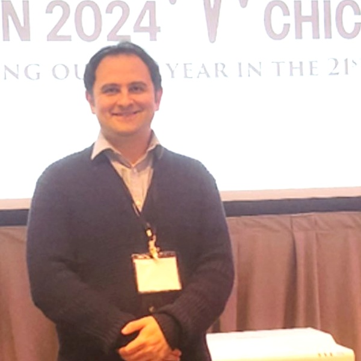

Manuscript submitted to Physics in Medicine & Biology
Our manuscript on the first nozzle-mounted Compton-camera prompt-gamma imaging system for in-vivo proton therapy range verification was submitted.

Research Fellow
Department of Radiation Oncology
University of Maryland School of Medicine
I am a Research Fellow in the Department of Radiation Oncology at the University of Maryland School of Medicine. My research focuses on artificial intelligence for medical imaging, proton therapy, prompt-gamma imaging, volumetric image synthesis, and efficient deep-learning models.
I am particularly interested in conditional diffusion models, 3D medical-image synthesis, semantic segmentation, super-resolution, and clinically deployable AI systems for image-guided radiation therapy.
Our manuscript on the first nozzle-mounted Compton-camera prompt-gamma imaging system for in-vivo proton therapy range verification was submitted.
Presented a conditional wavelet-diffusion framework with depthwise convolutions for high-resolution 3D medical-image synthesis.
Selected for an oral presentation on clinical integration of a nozzle-mounted quad-camera prompt-gamma imaging system.
Complete publication list in reverse chronological order. First-author contributions are highlighted.
Vikas Reddy Venkannagari, S. Sharma, Parthan Olikkal, Dev Parikh, J. Paun, Farshad Safavi, et al.
Sensors, volume 26, issue 14, article 4636, 2026
Farshad Safavi, Stephen W. Peterson, Vijay R. Sharma, Sina Mossahebi, Ananta R. Chalise, Harrison Lewis, et al.
2026 Joint AAPM | COMP Annual Meeting & Exhibition, 2026
Farshad Safavi, Aman Sangal, Hualiang Zhong, Lei Ren
2026 Joint AAPM | COMP Annual Meeting & Exhibition, 2026
Farshad Safavi, Stephen W. Peterson, Sina Mossahebi, Ananta Chalise, Vijay R. Sharma, Matthias K. Gobbert, et al.
arXiv preprint arXiv:2606.03978, 2026
Farshad Safavi, Kulin Patel, Ramana Vinjamuri
IEEE Transactions on Affective Computing, 2025
Farshad Safavi, Vikas Reddy Venkannagari, Dev Parikh, Ramana K. Vinjamuri
IEEE Access, 2025
Farshad Safavi
Ph.D. dissertation, University of Maryland, Baltimore County, 2025
Farshad Safavi, Parthan Olikkal, Dingyi Pei, Sadia Kamal, Helen Meyerson, Varsha Penumalee, Ramana Vinjamuri, et al.
Journal of Intelligent & Robotic Systems, volume 110, article 45, 2024
Arnab Neelim Mazumder, Farshad Safavi, Maryam Rahnemoonfar, Tinoosh Mohsenin
ACM Transactions on Embedded Computing Systems, volume 23, issue 3, pages 1–28, 2024
Farshad Safavi, Dingyi Pei, Parthan Olikkal, Ramana Vinjamuri
In Discovering the Frontiers of Human-Robot Interaction, Springer, pages 103–133, 2024
Farshad Safavi, Vikas Reddy Venkannagari, Ramana K. Vinjamuri
2024 IEEE 20th International Conference on Body Sensor Networks (BSN), pages 1–4, 2024
Kulin Patel, Farshad Safavi, Ramana Chandramouli, Ramana Vinjamuri
2024 46th Annual International Conference of the IEEE Engineering in Medicine and Biology Society (EMBC), pages 1–4, 2024
Farshad Safavi, Maryam Rahnemoonfar
IEEE Journal of Selected Topics in Applied Earth Observations and Remote Sensing, volume 16, pages 4–20, 2023
Farshad Safavi, Kulin Patel, Ramana K. Vinjamuri
2023 IEEE 19th International Conference on Body Sensor Networks (BSN), pages 1–4, 2023
Maryam Rahnemoonfar, Farshad Safavi
IGARSS 2023 — IEEE International Geoscience and Remote Sensing Symposium, pages 1668–1671, 2023
Farshad Safavi, Irfan Ali, Venkatesh Dasari, Guanqun Song, Ting Zhu, Maryam Rahnemoonfar
arXiv preprint arXiv:2212.13691, revised 2023
Farshad Safavi, Tashnim Chowdhury, Maryam Rahnemoonfar
2021 IEEE International Conference on Big Data (Big Data), pages 4199–4207, 2021
Maryam Rahnemoonfar, Farshad Safavi
AGU Fall Meeting Abstracts, NH35F-16, 2021
Farshad Safavi, Mohammadhassan Owlia
University of Toronto course project, 2016
Current Google Scholar metrics provided July 2026.
Selected public repositories loaded automatically from my GitHub profile.
Please wait while the latest public projects are retrieved from GitHub.
ASTRO Annual Meeting · Boston · 2026
Slides